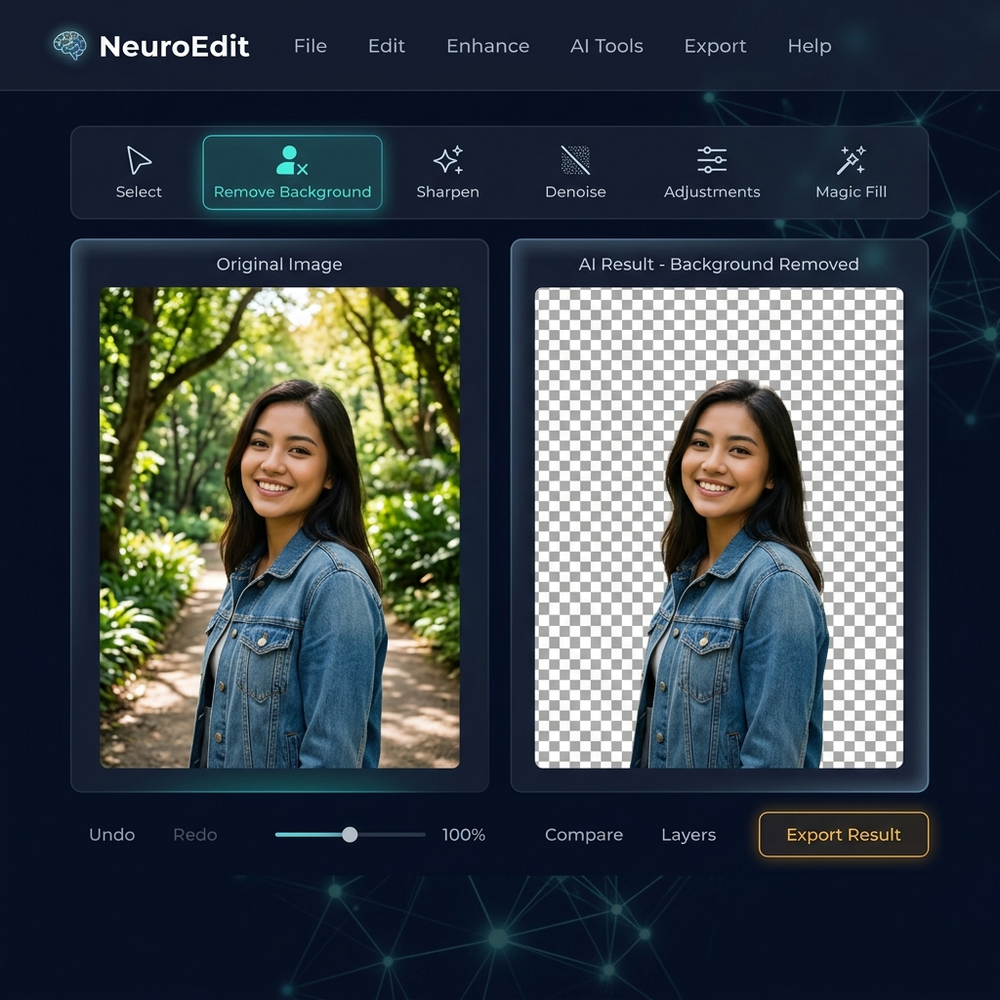

NeuroEdit — AI Image Editor
A full-stack AI image editor offering premium features like background removal, portrait mode, and generative fill for free.
Tech: Python, PyTorch, U²-Net, FastAPI, Flask, Next.js, Computer Vision

Highlights
- Architected a scalable computer vision pipeline using PyTorch and U²-Net for salient object detection and pixel-precise background removal with alpha matte output.
- Developed a high-performance Python backend with FastAPI serving ML models for background removal, Generative Fill, and noise reduction.
- Built an interactive Next.js frontend with real-time preview, before/after comparison, and batch processing capabilities.
- Designed the system to deliver premium mobile editing capabilities (like Picsart Gold) entirely for free in the browser.
Impact & Metrics
- Sub-second inference on standard hardware via optimized model serving and image preprocessing.
- Full-stack architecture bridges ML research and production deployment — the exact pipeline used in medical imaging labs.
- Zero-cost deployment model with client-side previews and server-side heavy processing.
System Architecture
- Next.js frontend handles image upload, real-time preview, and before/after comparison with client-side optimizations.
- FastAPI + Flask backend wraps PyTorch U²-Net model; endpoints for salient object detection, sharpening, and denoising.
- Image processing pipeline: upload → preprocessing → model inference (salient object detection) → alpha matte refinement → delivery.
Ownership & Learnings
Solo build: end-to-end architecture, ML model integration, backend API design, frontend UI/UX, and deployment pipeline.
NeuroEdit uses U²-Net — a nested U-structure network designed specifically for salient object detection — to deliver production-quality background removal. Unlike general-purpose segmentation models, U²-Net generates rich alpha mattes that capture fine details like hair, fur, and semi-transparent edges with high fidelity.
The architecture is designed for extensibility: the FastAPI backend serves as a model gateway, making it straightforward to add new vision capabilities (object detection, style transfer, super-resolution) alongside the existing pipeline. The Next.js frontend provides an intuitive editing experience with real-time previews and a premium dark-mode interface.
Live Application
Loading interactive experience…